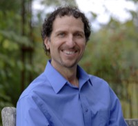

At the festival
2025
- Journalist Trade Secret
- Discussant Trade Secret
- Panelist Against the Current: Breaking Through the Dominant Narrative Panel
Biography
Costas Christ is a New York Times contributing writer and award-winning former National Geographic editor and columnist. His work spans the intersection of travel, conservation and sustainability. NBC Today Show said: “For the past 30 years, Costas Christ has been at the leading edge of the green travel movement, since way before it was ever called green or even a movement.” In 2005, Costas was tapped by the United Nations to establish the world’s first international criteria for defining sustainable travel best practices. In 2012, he was recognized with conservationist Dr. Jane Goodall and ocean explorer, Dr. Sylvia Earle for his global work to save nature. In 2016, Costas received the International Peace Through Tourism Award for his role in supporting the Colombia Peace Process. He was inducted as a National Fellow of The Explorer’s Club in 2023 and Costas’ life’s work has been featured in two documentary films, including the 2022 release, The Last Tourist. He is a co-founder of the Blue Climate Initiative and serves as Program Chair on the board of directors of the Tetiaroa Society, an international marine science organization. His travels have taken him to more than 140 countries across six continents. He is co-author of Transformational Opportunities for People, Ocean, Planet (2021); Transboundary Conservation (2005); and Wilderness: Earth’s Last Wild Places (2004). Costas’ media appearances include Good Morning America, Today Show, BBC World, CNN, National Geographic Channel and National Public Radio, among others.
From the festival website (archived), 2025
Other bios (1)
Costas Christ is a New York Times contributing writer and former National Geographic editor. A pioneer in green travel, he helped define sustainable travel standards for the United Nations. His work, featured in The Last Tourist (2022), earned the International Peace Through Tourism Award and recognition alongside Jane Goodall.
From the 2025 catalogue, p. 36